Sjokoladekake for voksne (oppskrift)
Jeg har en kompis som ikke liker sjokolade. Det er helt utrolig. Jeg trodde det ikke var mulig første gang jeg hørte det. Synd for ham.
Jeg elsker selvfølgelig sjokolade, og jeg liker sjokoladekaker som smaker sjokolade, ikke dårlig kakaofyll. I Japan lever man ofte etter filosofien om at maten skal smake det den ser ut som. Spiser du fisk, skal det smake fisk, med minst mulig innblanding (sushi).
Hvis du liker sjokolade, hvorfor ikke bruke den sjokoladen du vanligvis spiser i kaken? Hvorfor kjøpe kokesjokolade hvis du egentlig elsker bocca 70%, eller firkløver?
Denne kaken er, ved siden av mammas firkløverkake, kanskje den beste sjokoladekaken jeg noensinne har smakt. Av en enkel grunn: Den smaker sjokolade!
Dessuten er den superenkel å lage.
Her er oppskriften:
200 gram mørk sjokolade (hmmm!)
200 gram usaltet smør
3 dl sukker
5 store egg
1 ts hvetemel
Sett ovnen på 190 grader før du starter.
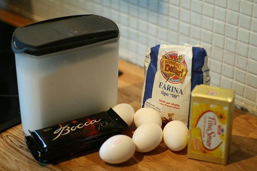
Rollelisten (fra venstre): Sukker, Boccasjokolade 70%, egg, bakemel (vanlig hvetemel funker like bra) og usaltet smør.
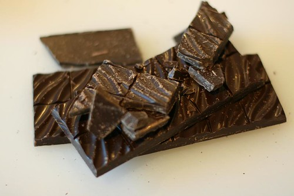
Legg sjokoladen på en skjærefjøl.
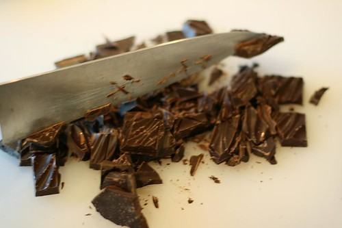
Kutt den opp i mindre biter slik at den vil smelte fortere.
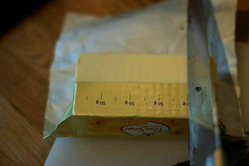
Mål opp 200 gram usaltet smør.
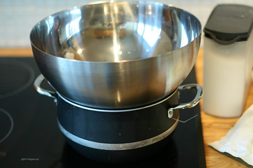
Varm opp vann i en kjele, og plassér en metallbolle over.
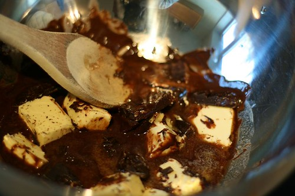
Putt all sjokoladen og smøret i bollen, og rør rundt med en tresleiv.
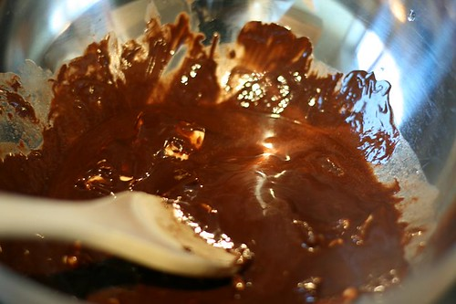
Rør til smøret smelter og forsvinner inn i den smeltede sjokoladen.
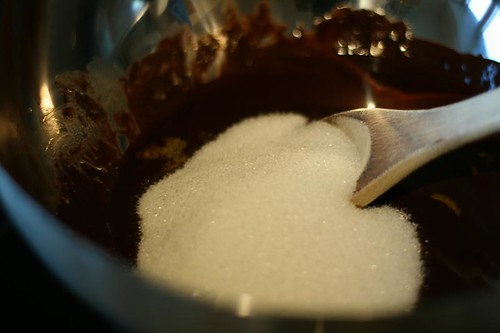
Tilsett sukkeret, og rør det godt inn.
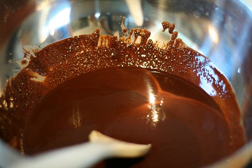
Slik skal det se ut. Sukkeret er ikke lenger synlig. Fjern deretter bollen fra kjelen, og la den avkjøles på en klut i 1-2 minutter.
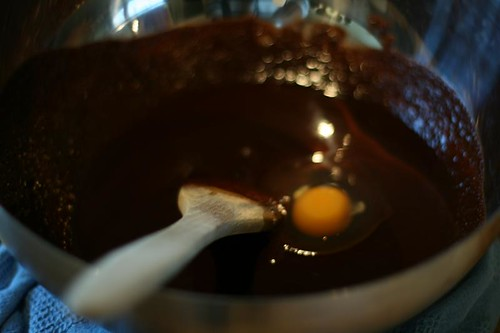
Nå er det tid for eggene. Rør inn ETT OG ETT EGG! ALTS�?: IKKE R�?R INN NESTE EGG F�?R DET F�?RSTE ER FULLSTENDIG INKORPORERT I SJOKOLADEN!
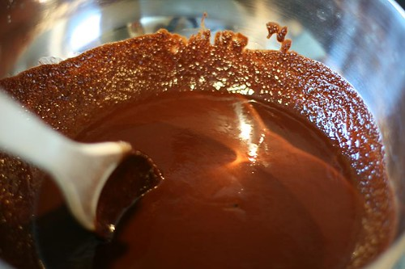
Slik, og nå er det klart for et nytt egg. Repeter til alle eggene er inkorporert. Du vil merke at røren vil bli tykkere og seigere underveis.
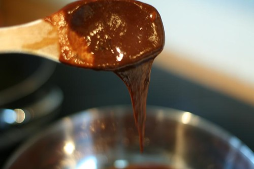
Når alle eggene er blandet inn, vil den være så seig og tykk at røren vil se ut som på bildet.
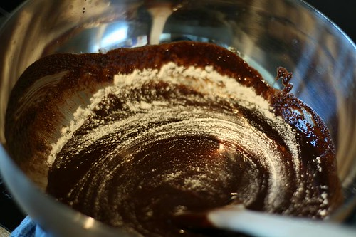
Tilsett mel og rør til det forsvinner.
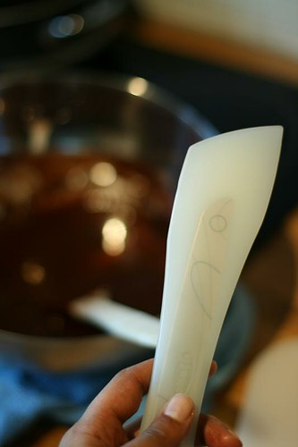
Finn frem en slikkepott.
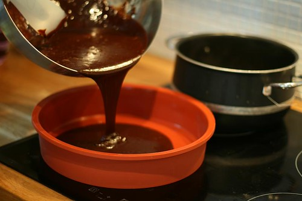
Hell ut røren i en form. Ikke større enn 30 cm i diameter. Ikke bruk en form med springfjær!
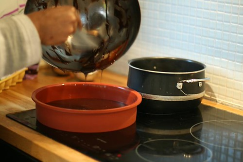
Bruk slikkepotten til å få ut absolutt alt. (Vi sløser tross alt ikke med god sjokolade)
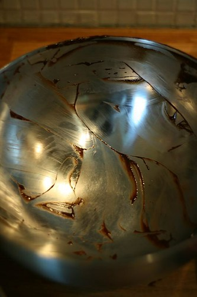
Bollen bør se slik ut etter at du er ferdig med den, eller så blir jeg skuffet.
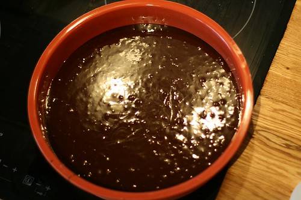
Voilá! Nå er den klar for ovnen som har rukket bli 190 grader.
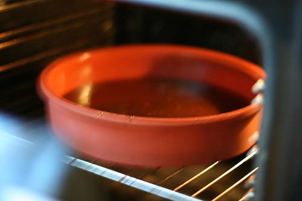
Inn med den (på en rist). La den bakes i 20-25 minutter. Etter 20 minutter kan du sjekke den.
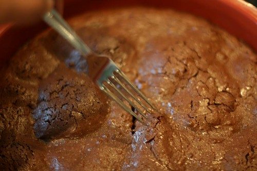
Det gjør du ved å stikke en gaffel i midten på kaken.
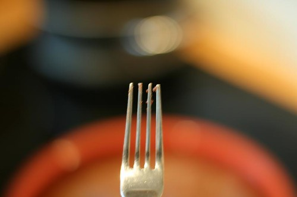
Dersom den ser slik ut (uten flytende røre, men bare noen tørre smuler), er den ferdig!
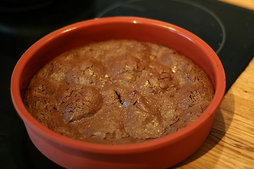
Ta ut formen, og la den hvile i 15 minutter.
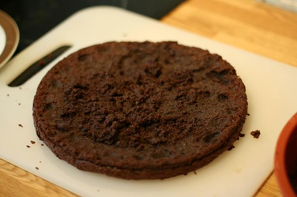
Overfør til en skjærefjøl, eller en avkjølingsrist (hvis du har), ved å legge den over formen, presse sammen, og snu den rundt på hodet slik at kaken faller ned på brettet. Avkjøl ytterligere 10 min, så kan du overføre den på en serveringstallerken.
Her er den: Ferdig! Men den kan ikke spises ennå. Vent i minst 3-4 timer. Seriøst, des lenger du venter, jo bedre blir den. Denne kaken blir faktisk best etter å ha vært i kjøleskapet over natta.
Serveres enten med vaniljesaus, vaniljeis, eller et stort glass melk!
PS: Legg igjen epost-adressen din under, så sender jeg den en mail når jeg legger ut neste oppskrift.
Takk til rouxbe for oppskriften.